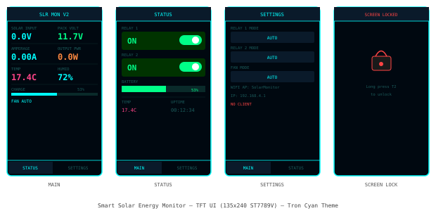
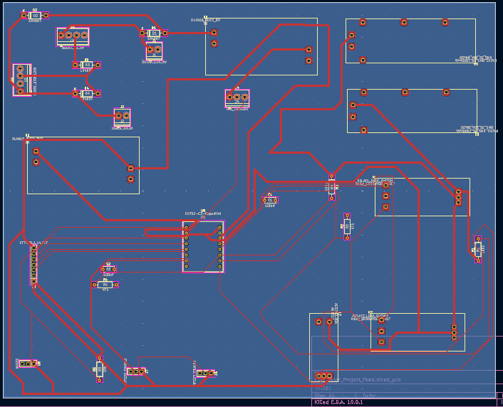
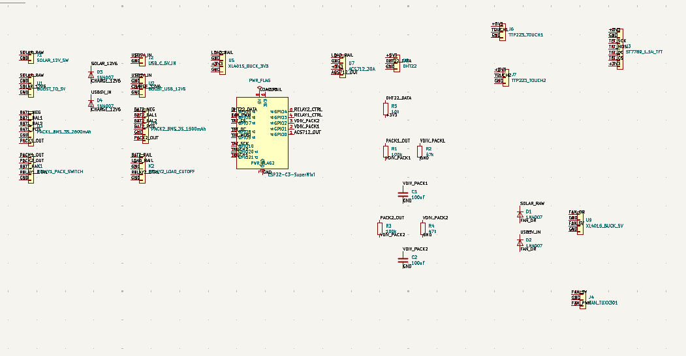
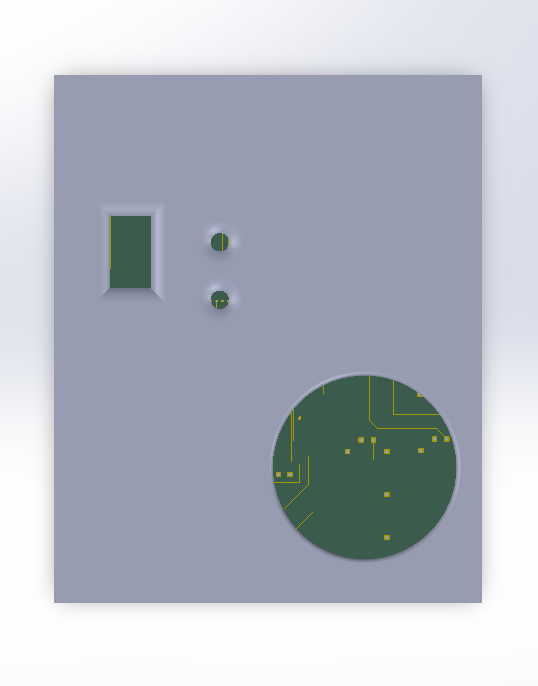
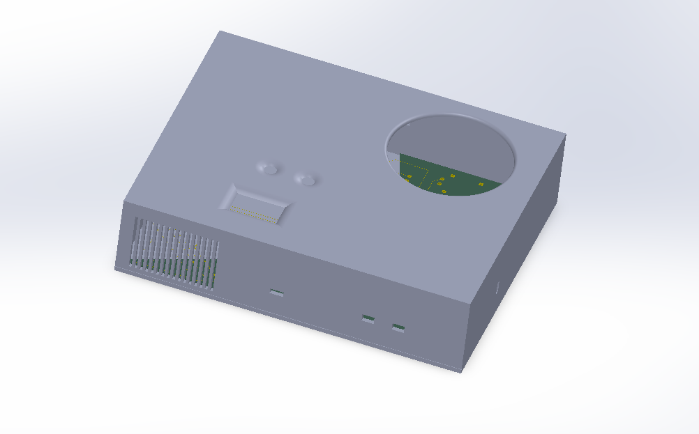
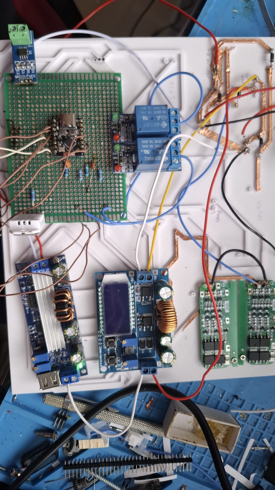
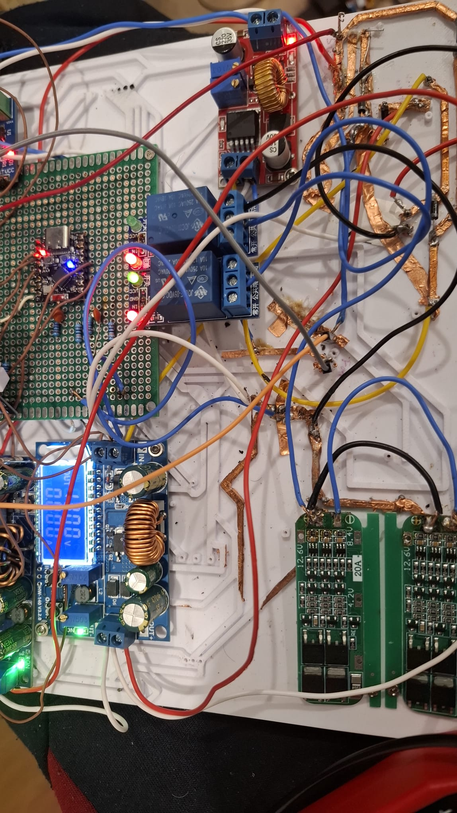

Design and build a fully functional solar energy monitoring and management system capable of real-time power measurement, automated relay control, environmental sensing, and live data visualisation — accessible from any device without a router.
The system targets the real-world challenge of small-scale solar integration: measuring solar input current and battery state, switching loads automatically based on voltage thresholds, and presenting all data on a local TFT display and WiFi web dashboard. Custom PCB designed in KiCad. Enclosure designed in SolidWorks.
Challenge 1 — GPIO9 Strapping Pin: GPIO9 on the ESP32-C3 is a strapping pin tied to boot mode selection. Any attempt to drive it LOW as a software output leaves it permanently HIGH — three approaches attempted before confirming the hardware-level limitation.
Challenge 2 — ADC1 Pin Shortage: The ESP32-C3 SuperMini exposes only ADC1 channels (ADC2 unsupported in Arduino framework). With GPIO0, GPIO1, and GPIO20 already assigned for current, voltage, and DHT22, no free ADC1 pin remained for an independent solar voltage rail.
Challenge 3 — Relay Boot Flicker: GPIO pins float briefly before the Arduino framework initialises on power-up. This caused relay coils to momentarily energise on every boot cycle — activating loads at unpredictable states for a split second.
Challenge 4 — ACS712 Zero-Current Offset Drift: The ACS712's nominal midpoint is 2.5V (half of 5V supply), but actual supply rail variation and temperature shift moved the real midpoint — causing a consistent -1.77A phantom reading at zero current with the theoretical calibration constant.
Challenge 5 — Voltage Divider Ratio Miscalculation: Theoretical VDIV_RATIO of 4.03 (calculated from resistor values) produced significantly incorrect battery voltage readings due to resistor tolerance stack-up in the physical divider chain.
Challenge 6 — DHT22 NaN on First Read: The DHT22 consistently returned NaN on first read after power-on — the sensor requires a stabilisation window after dht.begin() before its output is valid.
Challenge 7 — TFT Display Ghosting: Partial-screen refresh without full fillScreen() left residual pixels from previous renders, especially when switching between numeric text widths on the main dashboard screen.
GPIO9 / Fan Control — Hardware Bypass:
Software PWM on GPIO9 for fan speed control
Outcome: Pin permanently HIGH — strapping function overrides software regardless of pinMode()
Physical slide switch on 5V fan power line
Outcome: Fan control reliable, no GPIO constraint, zero boot risk
Relay Boot Flicker — ESP-IDF Init Sequence:
ACS712 Calibration — Empirical Midpoint:
Voltage Divider — Empirical Ratio:
DHT22 Stabilisation & TFT Anti-Ghosting: A 2-second delay inserted between Serial.begin() and dht.begin() in setup() eliminates the NaN first read. For the TFT, per-zone fillRect() clearing before each redraw targets only dirty regions — eliminating ghosting without the full-screen black flash of fillScreen().
Power Architecture — Relay Logic:
| GPIO | Function | Component |
|---|---|---|
| 0 | Current Sense (ADC1) | ACS712-5A — solar input line |
| 1 | Battery Voltage (ADC1) | Resistor Divider (R1=100kΩ, R2=10kΩ) |
| 2 | Relay 1 — Load Control | Relay Module (active HIGH) |
| 3 | Relay 2 — Charge Control | Relay Module (active HIGH) |
| 4 | TFT DC | ST7789V SPI |
| 5 | TFT CS | ST7789V SPI |
| 6 | SPI CLK | ST7789V SPI |
| 7 | SPI MOSI | ST7789V SPI |
| 8 | TFT RST | ST7789V SPI |
| 10 | Touch Button T1 | TTP223 — screen nav / short press |
| 20 | DHT22 Data | DHT22 — temp & humidity |
| 21 | Touch Button T2 | TTP223 — screen nav / long press unlock |
3-screen navigation system with screen lock. Touch T1 to cycle screens. Long-press T2 to unlock from the lock screen. All screens share the same Tron Cyan theme over a deep navy background.





✅ System fully operational — real-time current, voltage, power, temperature, and humidity on TFT and web dashboard.
✅ ACS712 stable at 0.00A no-load after empirical calibration. Battery voltage accurate to ±0.1V against multimeter.
✅ Relay automation confirmed — load disconnects below 10.5V, charge enables when solar exceeds battery voltage.
✅ WiFi web dashboard live at 192.168.4.1 — relay toggle and live sensor data, no router required.
✅ TFT smooth across all 3 screens — no ghosting or flicker. Touch gestures (short / long / double press) all functional.
✅ KiCad PCB layout completed with BMS, relay, XL4015, and ACS712 footprints. SolidWorks enclosure fully modelled.
GPIO9 on the ESP32-C3 cannot be used as a general output — the boot-mode strapping function takes hardware priority. Consulting the chip's Technical Reference Manual before pin assignment would have saved multiple failed iterations.
Both the ACS712 and the voltage divider produced incorrect readings from their theoretical values. Real-world resistor tolerance and supply variation shift calibration constants significantly. Always measure at known reference conditions and work backwards to the actual constant.
Arduino's setup() runs too late to prevent relay flicker on power-up. ESP-IDF GPIO calls (gpio_reset_pin → gpio_set_direction → gpio_set_level) execute before the Arduino layer and are the correct fix. Learned that safety-critical outputs need initialisation at the lowest available layer.
fillScreen() eliminates ghosting but causes a visible black flash on every update cycle. fillRect() targeting only the dirty region is the professional approach — zero visual artifact, same result. This pattern applies to any embedded UI with partial state updates.
The ESP32-C3 SuperMini's limited ADC1 exposure forced a compromise — solar voltage mirrors battery voltage in v1 because no free ADC pin remained. This is a hardware planning failure. Next revision will include an ADS1115 I2C ADC module for independent multi-channel voltage monitoring.


Full firmware, KiCad schematics, PCB files, and SolidWorks enclosure available on GitHub.
github.com/Sam2001115